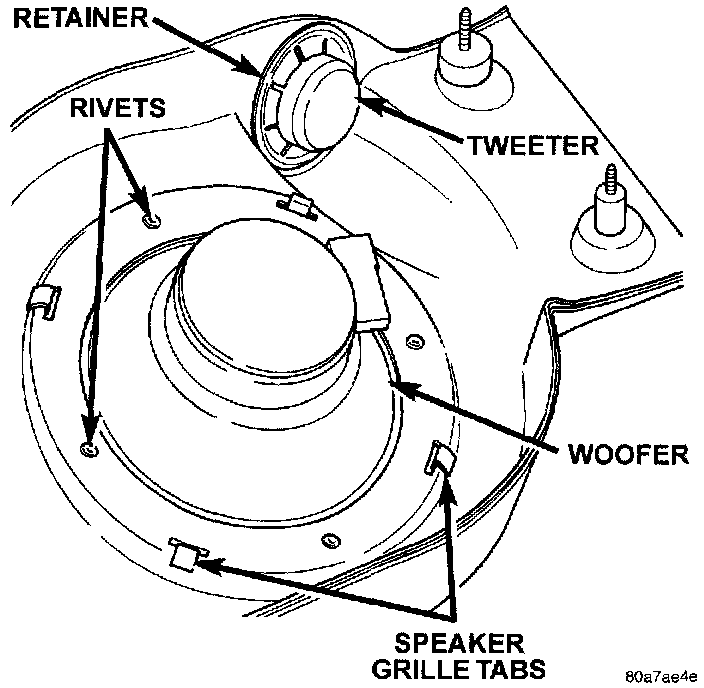
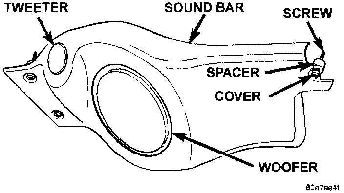

Sound Bar
Tweeter1. Remove the sound bar from the vehicle as described.
2. Unplug the wire harness connector from the tweeter.
Sound Bar Speakers Remove/Install:

3. Use a pair of side cutters to cut and remove the push-nut type retainer that secures the tweeter from the inside of the sound bar.
4. Push the tweeter out of the mounting hole from inside the sound bar.
5. Reverse the removal procedures to install. Always use a new retainer on the tweeter.
Woofer
1. Remove the sound bar from the vehicle as described .
2. Unplug the wire harness connector from the woofer.
Rear Door Speaker Remove/Install:

3. Straighten the tabs that secure the speaker grille from the inside of the sound bar.
4. Remove the speaker grille from the outside of the sound bar.
5. Carefully drill out the four rivets that secure the woofer to the sound bar.
6. Remove the woofer from the sound bar.
7. Reverse the removal procedures to install. Use new rivets installed from the inside of the sound bar to secure the woofer.
Sound Bar
1. Disconnect and isolate the battery negative cable.
Sound Bar Remove/Install:

2. Gently pry at the edge of the five snap-fit screw covers on the sound bar to remove them.
3. Remove the five screws that secure the sound bar to the upper liftgate opening reinforcement.
4. Lower the sound bar far enough to unplug the wire harness connector near the right end of the sound bar.
5. Remove the sound bar from the vehicle.
6. Reverse the removal procedures to install. Be certain to reinstall a spacer on each screw between the sound bar and the upper liftgate opening reinforcement.